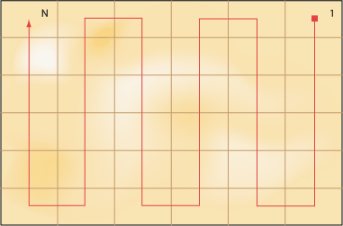
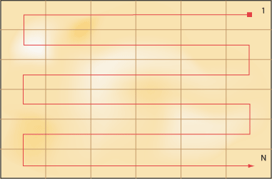

Разобьем пустыню на ряд элементарных прямоугольников, размер которых совпадает с размером клетки для льва. Пронумеровав прямоугольники от 1 до N, начинаем последовательно накрывать их клеткой (рис. 1). Каждое такое действие называется итерацией, что и послужило названием метода.

Рис. 1. Разбиение пустыни на N элементарных прямоугольников
В результате максимум за N итераций лев будет пойман в клетку.
Как видно из приведенного рисунка, начинать поиски льва можно с любой клетки, главное, чтобы за ограниченное количество шагов обойти все прямоугольники. При этом обход можно делать по вертикали, горизонтали (рис. 2) или диагонали.

Рис. 2. Обход пустыни по горизонтали